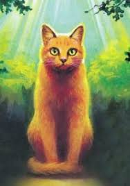

Rusty

A ginger housecat who is now a member of ThunderClan.
Bluestar

A blue-gray she cat who is the leader of ThunderClan and invites Rusty to join
Graypaw

A Gray tom who is an aprentice at ThunderClan. He originally attacked Rusty out in the forest